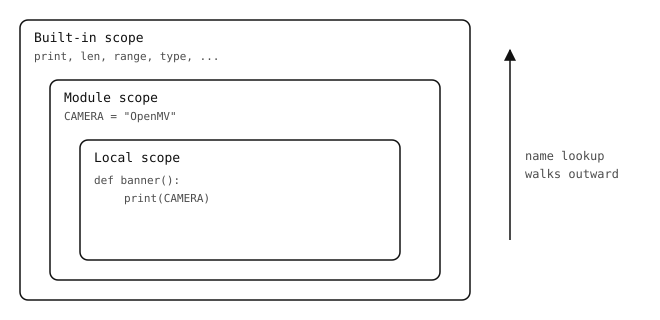

2.16. Phạm vi¶
Khi Python tra cứu một tên bên trong hàm, nó tìm kiếm theo một chuỗi phạm vi cụ thể. Hiểu chuỗi đó giải thích tại sao một số phép gán che khuất tên bên ngoài, tại sao một số khác sửa đổi chúng, và tại sao các hàm lồng nhau có thể nhớ các giá trị từ nơi chúng được định nghĩa.

Việc tra cứu tên bắt đầu từ phạm vi cục bộ của hàm và đi ra ngoài đến phạm vi mô-đun và phạm vi tích hợp sẵn cho đến khi tìm thấy kết quả khớp.¶
2.16.1. Phạm vi cục bộ và phạm vi mô-đun¶
Các tên được định nghĩa bên trong một hàm là cục bộ của hàm đó và biến mất khi lời gọi kết thúc:
def f():
x = 10
print(x)
f()
print(x) # NameError: x is not defined
Các tên được định nghĩa ở cấp cao nhất của tệp .py là cấp mô-đun (đôi khi gọi là toàn cục) và có thể nhìn thấy ở khắp nơi trong tệp đó, kể cả bên trong các hàm:
CAMERA = "OpenMV"
def banner():
print("running on", CAMERA)
Đọc tên cấp mô-đun từ bên trong hàm là tự động. Gán cho tên đó từ bên trong hàm thì không -- phép gán tạo ra một biến cục bộ mới che khuất tên cấp mô-đun trong suốt phần còn lại của lời gọi:
counter = 0
def bump():
counter = counter + 1 # UnboundLocalError
counter ở vế trái làm cho counter trở thành tên cục bộ trong bump, vì vậy việc đọc ở vế phải không có giá trị để tìm.
2.16.1.1. Từ khóa global¶
Để thực sự gán lại tên cấp mô-đun từ bên trong hàm, hãy khai báo nó là global trước:
counter = 0
def bump():
global counter
counter += 1
Dùng global một cách thận trọng. Các hàm thay đổi trạng thái ẩn khó suy luận hơn các hàm nhận giá trị qua đối số và trả về giá trị mới. Giải pháp thường gặp cho "tôi cần chia sẻ trạng thái" là truyền một đối tượng (list, dict, instance của class) như một đối số và thay đổi nó thay thế.
2.16.2. Lambda¶
Một lambda xây dựng một hàm ẩn danh nhỏ trong một biểu thức duy nhất:
square = lambda x: x * x
square(7) # 49
Nó hoàn toàn tương đương với
def square(x):
return x * x
Thân của một lambda phải là một biểu thức đơn -- không có câu lệnh, không có nhiều dòng. Cách dùng chính là truyền một hàm nhỏ như đối số cho thứ gì đó nhận một hàm:
pairs = [("b", 2), ("a", 3), ("c", 1)]
pairs.sort(key=lambda item: item[1])
# [('c', 1), ('b', 2), ('a', 3)]
Khi thân hàm dài hơn một biểu thức, hãy chuyển sang dùng def thực sự. Đặt tên hàm bằng def cũng đặt tên cho nó trong tracebacks, điều mà lambda không có.
2.16.3. Closure¶
Một hàm được định nghĩa bên trong một hàm khác có thể đọc các tên từ phạm vi của hàm bao. Hàm bên trong nắm bắt các tên đó và tiếp tục hoạt động ngay cả sau khi lời gọi bên ngoài đã trả về:
def make_adder(n):
def add(x):
return x + n
return add
add5 = make_adder(5)
add10 = make_adder(10)
print(add5(100), add10(100))
Kết quả:
105 110
add5 và add10 là hai hàm riêng biệt, mỗi hàm nhớ n của riêng nó. Một hàm xây dựng và trả về một hàm bên trong được tùy chỉnh theo cách này được gọi là closure. Đây là lý do chính một ngôn ngữ cần các hàm lồng nhau -- một cách để đưa một số trạng thái vào một giá trị hàm và sau đó chuyển giá trị đó đi như một callable duy nhất.
Việc đọc các tên được nắm bắt xảy ra tự động. Gán lại một trong số chúng cần một từ khóa thêm. Ví dụ bên dưới trông có vẻ đúng nhưng lại thất bại:
def make_counter():
count = 0
def tick():
count = count + 1 # UnboundLocalError
return count
return tick
Phép gán cho count bên trong tick làm cho count trở thành cục bộ của tick, giống như cách nó sẽ làm cho nó cục bộ trong một hàm cấp cao nhất. Từ khóa nonlocal nói với Python "tên này nằm trong hàm bao, hãy gán lại nó ở đó":
def make_counter():
count = 0
def tick():
nonlocal count
count += 1
return count
return tick
c = make_counter()
print(c(), c(), c())
Kết quả:
1 2 3
nonlocal đối với phạm vi hàm bao giống như global đối với phạm vi mô-đun. Lưu ý rằng việc thay đổi một đối tượng được nắm bắt (gọi some_list.append(...), some_dict[k] = v) không cần nonlocal -- tên không bị gán lại, chỉ là đối tượng nó trỏ đến đang bị thay đổi.